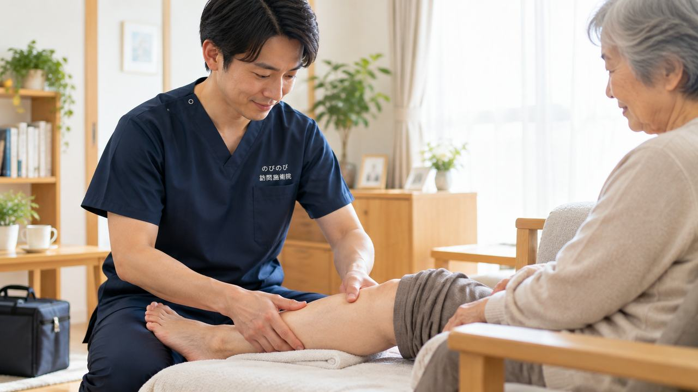

坐骨神経痛でお尻から足にかけて痛みやしびれが続くと、吹田市内の整形外科や治療院へ通うこと自体が重荷になっていきます。玄関の上がりかまち、車への乗り降り、順番を待つあいだの座位。どれも痛む腰や脚には負担になります。通院がむずかしくなったからといって、体のケアまであきらめる必要はありません。国家資格者が自宅へうかがう方法があります。ここでは、坐骨神経痛に鍼やお灸・手技でできること、先に医療機関へ相談すべきサイン、保険の対象や費用、吹田市での対応まで整理します。
要点から。坐骨神経痛で腰から足の痛み・しびれが長く続き、吹田市内の通院がつらくなった方は、自宅で訪問鍼灸マッサージを受けられます。長く続いている症状について、医師が鍼やお灸を必要と認めて同意書を書いてくれた場合、はり・きゅうの医療保険が使えます。料金は1回あたり総額3,950円。1割負担ならおよそ395円が目安です。対応エリア内であれば出張費は別にかからず、どこでも同じ金額です。急な脱力や、排尿・排便の異常が出た場合は、施術より先に医療機関での受診が必要です。
吹田市で「腰から足の痛み」に悩むあなたへ
お尻から太ももの裏、ふくらはぎへと電気が走るような痛みやしびれ。片脚だけがつらい。椅子から立ち上がる瞬間や、歩き出しの一歩、前かがみになったときにズキッとくる。吹田市にお住まいで、そんな坐骨神経痛や腰から足にかけての痛みに悩まされている方が多くおられます。駅からご自宅までの道のりや、買い物帰りの荷物が足腰にこたえるというお話をうかがいます。エレベーターのない建物では、階段が毎日の関門になっている方もいらっしゃいます。
一方、地下鉄御堂筋線の江坂周辺はオフィスが立ち並ぶ街で、朝から晩までデスクに向かう座り仕事の方が多い地域です。長時間同じ姿勢で座り続けると、腰やお尻の奥がこわばり、太もも裏の張りやしびれにつながることがあります。JR吹田・岸辺、阪急の豊津・関大前・千里山、山田や佐井寺、南吹田と、生活の場は違っても、「動き出しがつらい」「冷えるとしびれが強くなる」という悩みは共通しています。
坐骨神経痛・腰から足の痛みとは、どんな状態か
坐骨神経痛は病名というより、腰からお尻、太もも裏、ふくらはぎへと走る神経の道すじに沿って現れる痛みやしびれの総称です。多くは腰椎まわりに原因があり、片脚性に出やすいこと、座位が長く続いたあとや立ち上がり・歩き出しの動作で強まりやすいこと、そして体が冷えると症状が増すことが特徴です。万博公園に近い広々とした住宅地では、庭仕事や前かがみの作業が引き金になることもあります。症状の背景や日常で気をつけたいことは、坐骨神経痛・長引く腰の痛みで詳しく掘り下げていますので、あわせてご覧ください。
その痛み、まず医療機関で確認してほしいサインもあります
ほとんどの坐骨神経痛は生活の中で少しずつ和らげていける状態ですが、なかには先に病院での診察が必要なケースがあります。急に脚に力が入らなくなる脱力、片脚ではなく両脚に広がるしびれ、そして排尿や排便のコントロールがうまくいかないといった異常があるときは、整形外科などの医療機関を先に受診してください。これらは重い原因が隠れているおそれのあるサインです。無理に施術で様子を見ようとせず、まずは医師の判断を仰ぐことを優先していただきたいと思います。
ご自宅にうかがう訪問施術という選択肢
痛みが強いときほど、電車やバスで通院すること自体が負担になります。のびのび訪問施術院は、吹田市内のご自宅にうかがってはり・きゅう・マッサージを行う訪問施術院です。医療保険のはり・きゅうには対象となる6疾病があり、神経痛・リウマチ・頸肩腕症候群・五十肩・腰痛症・頸椎捻挫後遺症がこれにあたります。坐骨神経痛は「神経痛」や「腰痛症」の枠で該当しうるものとして扱われます。ただし施術は病気そのものを治すものではなく、効き方には個人差があることを、はじめにお伝えしておきます。関節を動かしやすくするための機能訓練も、鍼灸に加えるケアとして行っています。これらについて別途の料金はいただきません。
ご利用には医療保険（療養費）と医師の同意書が必要ですが、要介護認定は不要です。介護保険の限度額とは別枠なので、介護保険サービスと併用いただけます。なお、同一部位について医療保険のリハビリと鍼灸を同じ月に同時算定することはできません。吹田市の訪問対応の考え方は吹田市の訪問鍼灸マッサージで、どこまでうかがえるかは対応エリアはどこまで来てもらえる？でご案内しています。
料金の目安と、ご相談のはじめ方
料金は1回の施術で総額3,950円が目安です。医療保険の自己負担は、1割の方で約395円となります。週2回のペースなら、1割の方で月におよそ3,160円です。エリア内は出張費がかからず料金は一律で、遠方だからといって加算することはありません。自己負担額の仕組みや条件のこまかな点は料金はいくら？医療保険の自己負担額と仕組みにまとめていますので、そちらをご確認ください。デスクワークで固まった腰も、歩くのがこたえるようになった足腰も、まずは一度お声がけいただくところから、暮らしに合わせた受け方を一緒に決めていきます。
よくある質問
吹田市で坐骨神経痛でも保険を使えますか？
慢性的に続く坐骨神経痛について、かかりつけの医師が鍼やお灸での治療を必要と認めて同意書を書いてくれ、かつ通院がむずかしい状態であれば、医療保険の対象になります。吹田市のかかりつけ医にお願いでき、同意書の段取りは当院が整えます。今の困りごとと通院の状況を、まずはお話しください。
古い坐骨神経痛でも受けられますか？
急性期の激しい痛みではなく、長く続いている症状が対象になります。続いている期間が長い方ほど、腰から脚までをていねいにたどるケアが役に立ちます。ただし急に足に力が入らない、排尿・排便に異常があるといったときは、まず医療機関を受診してください。
しびれにも変化はありますか？
腰やお尻、脚のこわばりをゆるめ、めぐりをうながすことで、しびれの感じ方や重だるさが変わったと話される方がいます。神経を刺激している筋肉の緊張をゆるめること自体が助けになる場合もあります。効果の出方には個人差があります。
費用は1回いくらですか？出張費はかかりますか？
1回の施術が総額3,950円で、自己負担は割合の分だけです。1割の方でおよそ395円が目安です。別途の出張費（出張料・交通費）はかからず、エリア内はどこでも同額です。集金は月ごとにまとめて行い、その月の施術の内訳がわかる明細をお渡しします。
吹田市のどこまで来てもらえますか？
吹田市内全域に伺います。JR・阪急・地下鉄御堂筋線の沿線や千里ニュータウン方面など、市内であれば地域を問わず対応します。有料老人ホームやサービス付き高齢者向け住宅にお住まいの方のところにも伺えますので、お住まいの地域を教えてください。
要介護認定を受けていなくても受けられますか？
受けられます。訪問鍼灸マッサージは医師の同意にもとづく医療保険を使うもので、介護保険の要介護認定とは別の仕組みです。認定を受けていない方でも、医師が鍼やお灸を必要と認めれば対象になります。介護保険の限度額とも別枠です。
吹田市でひとり暮らしでも受けられますか？
はい。ひとり暮らしの方も受けられます。急なときのご家族などの連絡先をうかがい、安心して続けられるようにします。ご本人がお電話に出るのが難しければ、離れて暮らすご家族からのご相談だけでも構いません。
腰から足のケアは毎回同じ人が来ますか？
できるだけ同じ担当者が続けて伺います。腰からお尻、脚全体の状態を同じ目で続けて見られるので、変化に気づきやすく、その方に合わせたケアを重ねていけます。同じ曜日・時間帯で伺うことが多く、生活のリズムにも組み込みやすくなります。

池田市で坐骨神経痛・腰から足の痛みにお悩みの方へ｜自宅で受けられる訪問鍼灸マッサージ
続きを読む
箕面市で坐骨神経痛・腰から足の痛みにお悩みの方へ｜自宅で受けられる訪問鍼灸マッサージ
続きを読む
摂津市で坐骨神経痛・腰から足の痛みにお悩みの方へ｜自宅で受けられる訪問鍼灸マッサージ
続きを読む
都島区で坐骨神経痛・腰から足の痛みにお悩みの方へ｜自宅で受けられる訪問鍼灸マッサージ
続きを読む
尼崎市で坐骨神経痛・腰から足の痛みにお悩みの方へ｜自宅で受けられる訪問鍼灸マッサージ
続きを読む